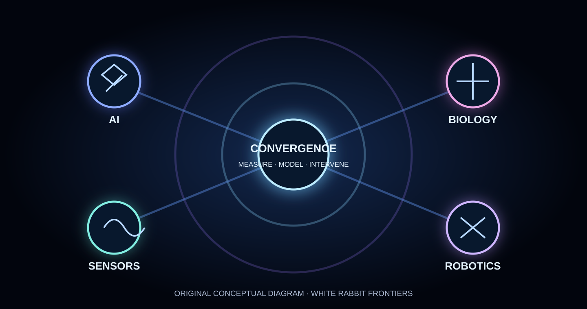

The future may not arrive as one spectacular invention. It may emerge in the connections between inventions.
An algorithm predicts. A sensor measures. A robot tests. A biological system responds. The result becomes the next question. This is the convergence worth watching, but a compelling diagram is not evidence that every promised capability already works.
Artificial intelligence, biotechnology, robotics and sensing are often discussed as separate revolutions. Yet their boundaries are increasingly porous. The important question is not whether the fields are advancing. It is whether their combinations produce reliable new abilities that none could offer alone.
Measure. Model. Intervene. Measure again.
Consider a simple cycle: instruments collect observations; computational models suggest explanations or next experiments; people or automated equipment act; fresh measurements reveal whether the intervention worked. In science, versions of this cycle are familiar. The emerging change is the scale and speed at which software and machines may help close it.

AI meets biology: from prediction to experiment
AlphaFold 3, described in Nature in 2024, extended structure prediction to complexes involving proteins, DNA, RNA, ligands and other molecular partners. That is an example of computation opening a larger space of biological hypotheses. It does not mean that every predicted interaction occurs in living organisms or becomes a useful drug. Read the primary paper.
Another illustration is automated scientific experimentation. In a 2023 Nature paper, researchers described an autonomous laboratory that used machine learning, literature-derived information and robotic synthesis to explore inorganic materials. The system conducted hundreds of experiments across multiple candidate materials. The achievement was not an all-knowing machine scientist; it was a narrower loop joining model selection to physical testing. The paper has since received an author correction, and researchers have questioned aspects of the original material-identification claims. Its value as an example of an integrated automated workflow should not be confused with independent validation of every reported new compound. Read the January 2026 author correction. Read the autonomous laboratory study and its linked correction.
When the world becomes measurable
On a planetary scale, satellites, environmental DNA sampling and underwater acoustic monitoring provide different views of changing ecosystems. Each sensor sees only part of the story. Connecting them can improve situational awareness, but combining datasets also introduces uncertainty, gaps in coverage and risks of false confidence.
Our companion feature, The Ocean Is Becoming Readable, explores this frontier in more detail. The sea is not suddenly transparent to science. It is becoming observable in more ways, and that distinction matters.
When models gain hands
A model that suggests an experiment is one thing. A robotic system that performs it, checks the outcome and selects the next test is another. Automated laboratories show why robotics can turn AI from a source of plausible answers into a participant in discovery workflows.
But physical systems are unforgiving. Instruments drift. Samples become contaminated. Robotic actions fail. Model outputs may be convincing and wrong. Human oversight, reproducibility, calibration and safety procedures are part of the achievement, not obstacles to it.
The difference between acceleration and proof
There is a temptation to infer that because tools connect more easily, science as a whole must be accelerating at the same rate. That conclusion does not follow automatically. Some fields may see rapid gains in screening and experimentation while others remain constrained by scarce data, clinical trials, regulation, manufacturing or fundamental uncertainty.
Evidence compass: Protein-complex prediction and automated materials experiments are documented research capabilities. Planetary sensing methods are established in specific contexts. Fully autonomous, generally reliable discovery across all these domains is a hypothesis, not an established result.
We should therefore ask three questions of every convergence claim: What new capability was demonstrated? In what setting, with what controls? And does it survive independent testing outside the demonstration?
Who benefits from the connections?
The hidden benefits could be substantial: faster searches for promising molecules, more informative environmental monitoring, less repetitive laboratory work and earlier detection of problems in complex systems. So could the hidden costs: concentrated infrastructure power, energy and water demands, unequal access, opaque decision-making and fragile chains of automated errors.
For White Rabbit Frontiers, convergence is neither a guarantee of salvation nor a reason to fear every new machine. It is an editorial compass. What happens when we gain the ability to read, and eventually rewrite, the systems that shape our lives?
The most exciting answer is not that anything imaginable has become possible. It is that the boundary between understanding a system and responsibly acting on it is becoming a place where genuine discoveries can happen.
Primary sources and related reporting
- Abramson et al., Nature (2024), Accurate structure prediction of biomolecular interactions with AlphaFold 3.
- Szymanski et al., Nature (2023), An autonomous laboratory for the accelerated synthesis of novel materials.
- White Rabbit Radar, The Ocean Is Becoming Readable, related editorial investigation.
- White Rabbit Radar, The Writable Brain, related editorial investigation.